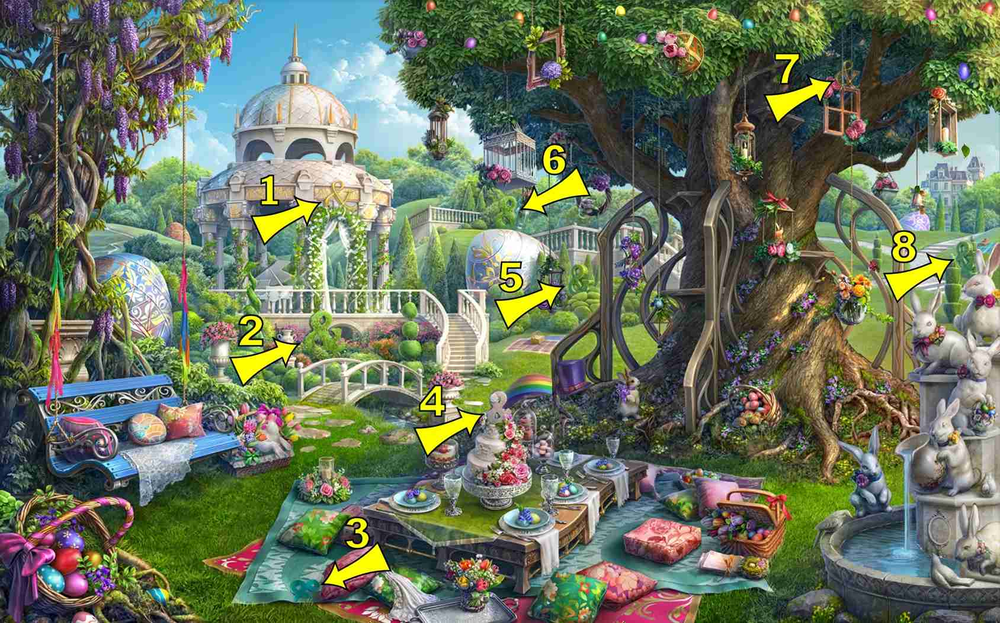
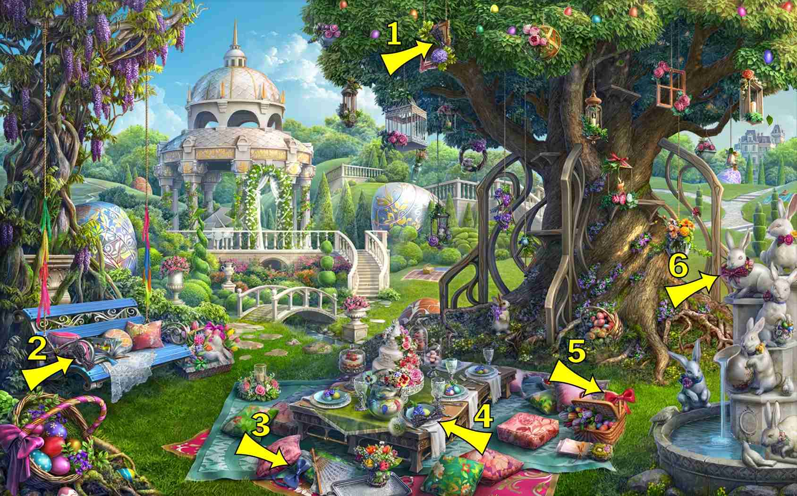
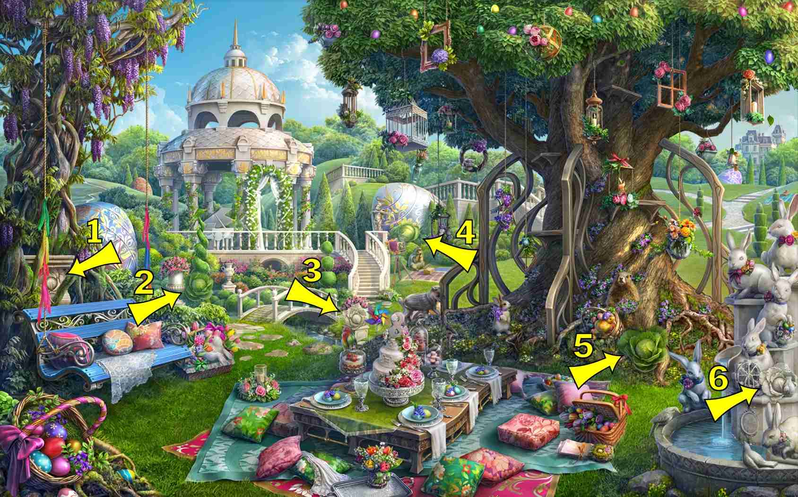
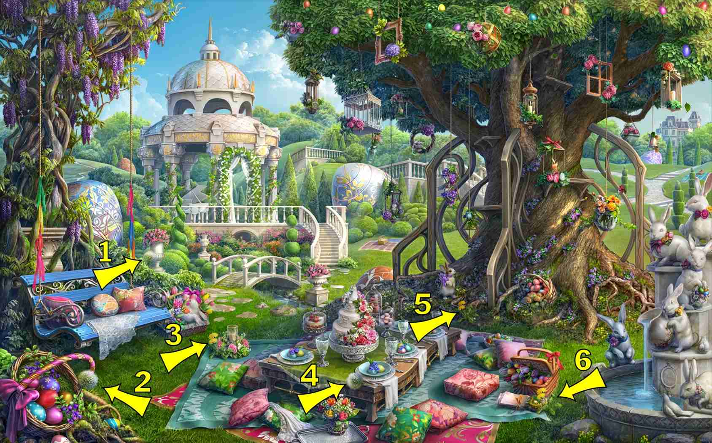
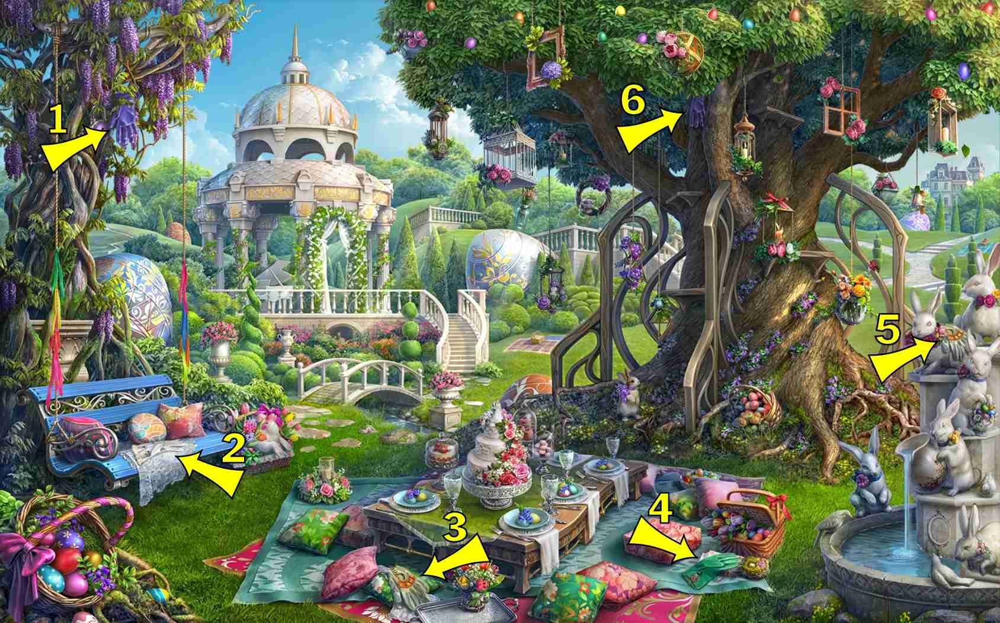
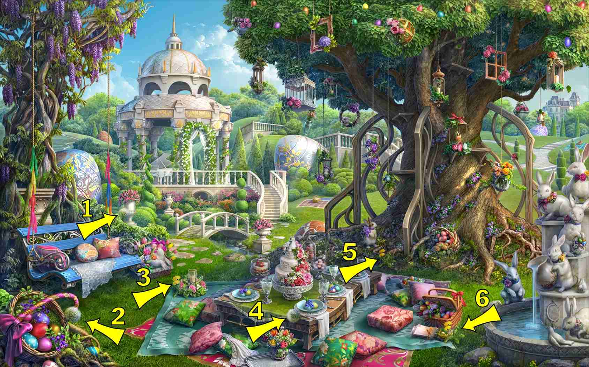
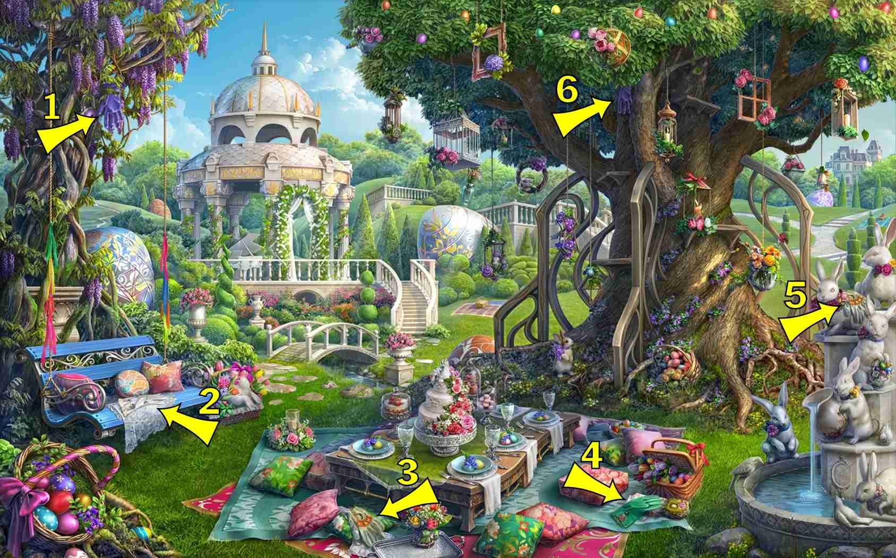

8 items:
- Base of tree, right side, vertical
- Right side of table
- Left tree railing, vertical. Just right of where sign #4 is located
- Sticking in left side of cake, top of first tier
- Bottom right, in fountain between pigeon and bunny
 




7 items:
- Picnic table, swizzler stick in glass